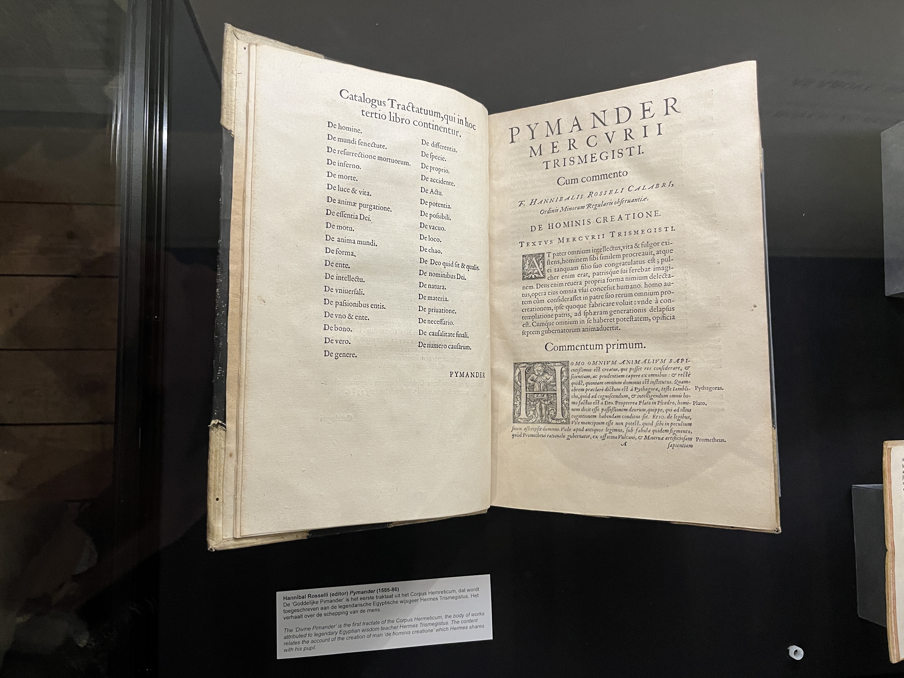
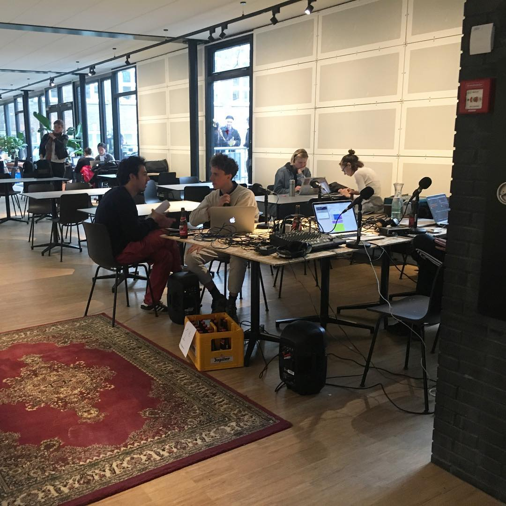
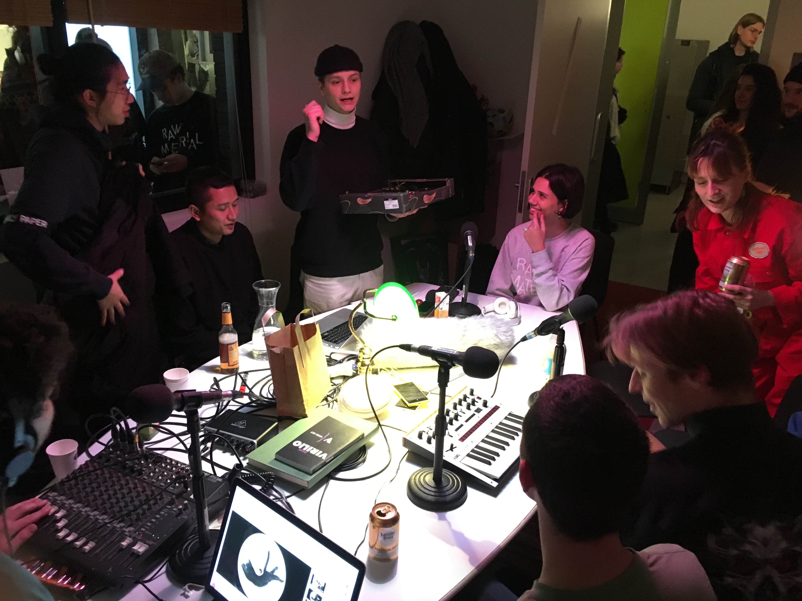
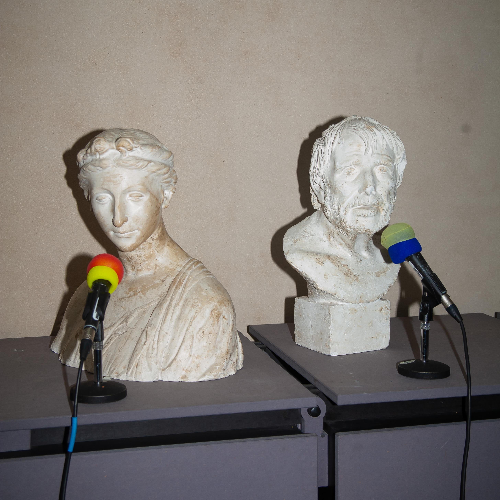
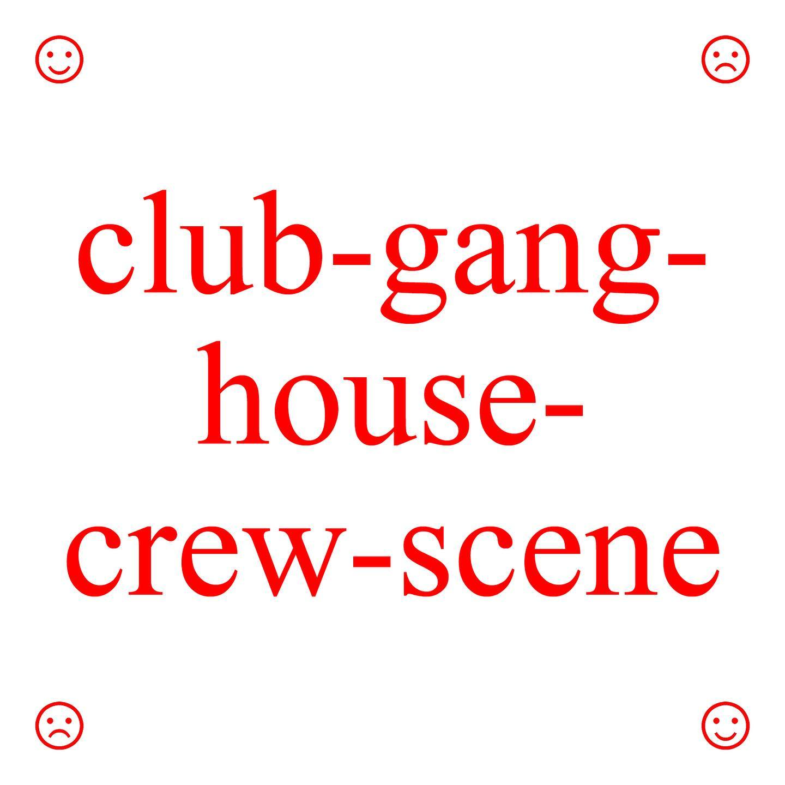
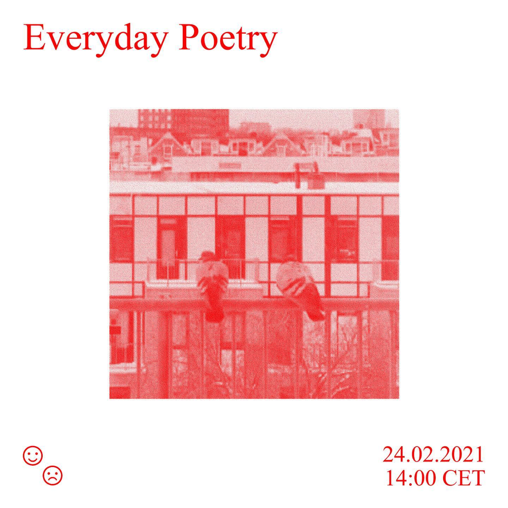
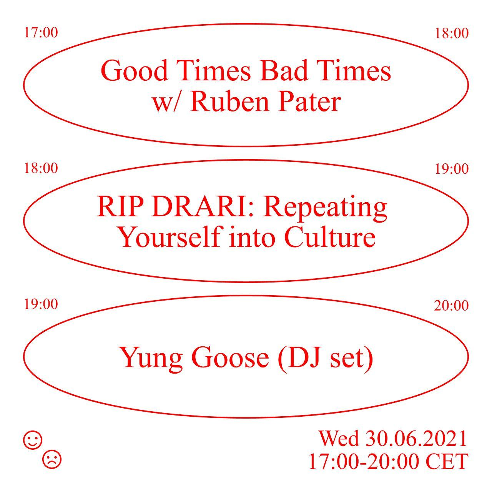

Have a Conversation
first presented: 24th February 2023
How can conversation be a research method?
What is a conversation?
The artistic process feels a lot like Intrapersonal Communication most of the time
- Why am I doing this?
- Is this good enough?
- Do I enjoy this??
- What am I trying to achieve?!
- Is this really worth it?!!
- Do I even want to be an artist?!?
- Why don't I just get a normal job??!
- Would that really make me happier?
It reminded me of Marthe's talk about How to Artistic Research
Arguing for a point of view + making public
How does bringing things outside our own minds actually help us?
We saw this book on a previous trip to the Embassy of the Free Mind
Pymander (Corpus Hermeticum) – Hannibal Rosselli, 1585-86
"The 'divine pimander' is the first fractate of the Corpus Hermeticum, the body of works atrributed to legendary Egyptian wisom teacher Hermes Trismegistus. The content relates the account of creation of the man 'de hominis creatione' which Hermes shares with his pupil"
Our guide at the museum said this book was written to kind of simulate a conversation going on in the authors head which apparently was similar to the way that Plato wrote his texts...
Explaining ideas can be difficult...

..but maybe that's fine

How can this be used within an artistic practice?
Radio
Radio broadcasts are a simple way of broadcasting messages from A to B

first radio to broadcast entertainment was here in The Hague

PCGG
First radio to broadcast entertainment (1919)
The Dutch were famous for their pirate radio stations
Radio as subersive medium
My relationship to radio

interviewing Ivan Čuić of Kantarion Sound
using the canteen as broadcasting space
chili eating contest at open day 2018

interviewing former director about recycling policies
mushroom radio becomes part of kabk
  
Radio Workshop
March 22nd: Broadcast on Mushroom Radio
- Create groups of 4
- Within those groups, split into pairs
- Interview each other for 5 minutes about the sounds you brought (10 minutes total)
- Come back together as a group of 4 to discuss your conversations
- Make a 5 minute radio show